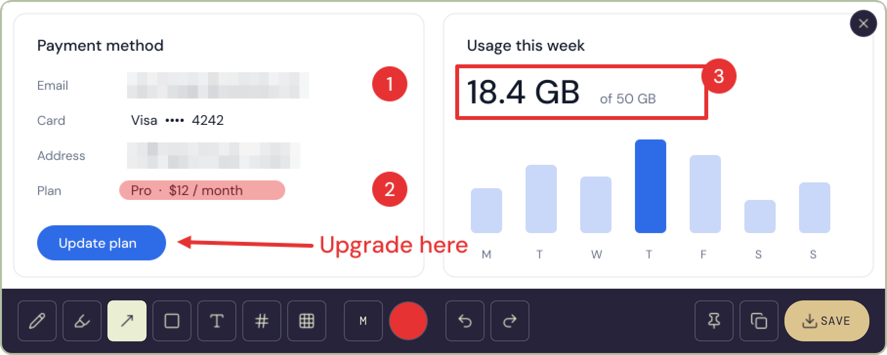
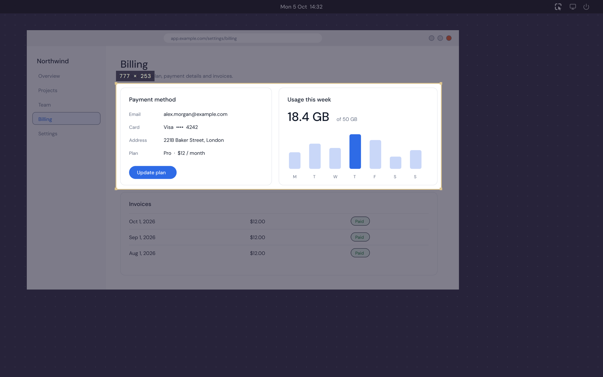
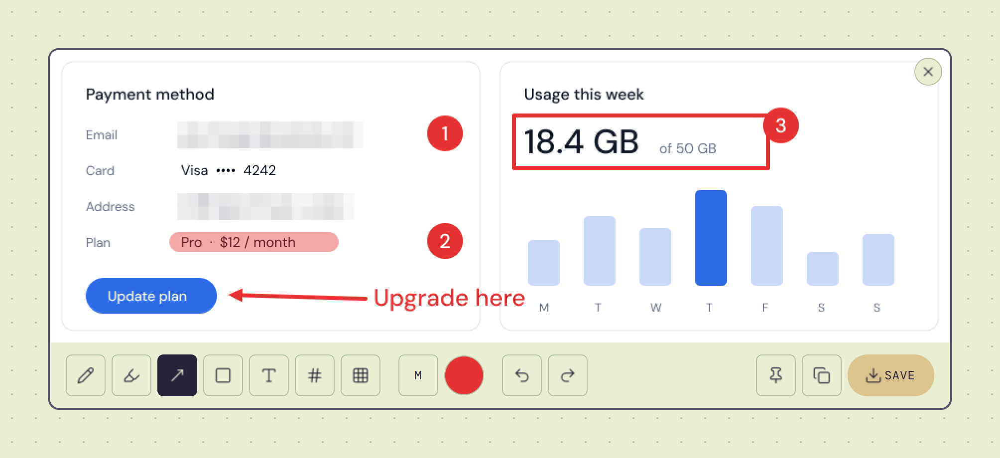
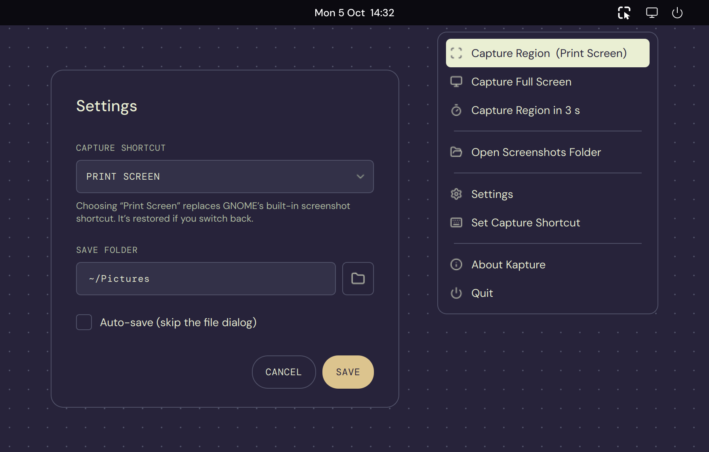

Kapture freezes your screen, lets you select any region, and marks it up with arrows, highlights, text, numbered steps and pixelated secrets. Then copy, save or pin it, all in a couple of seconds.

One shortcut to capture, one toolbar to explain it. No accounts, no uploads, no extra tools to install.
Press your shortcut and the screen freezes and dims. Drag over what matters and it's copied the moment you let go, or press Enter to grab the whole screen.

Pixelate emails, addresses and keys. The pixels are baked into the image, so they can't be recovered.

Region, full-screen or delayed capture, your screenshots folder, and settings for the shortcut and save options.

Free, with no account. Kapture starts in your tray and is ready the moment it's installed.
Download the .deb and double-click it to open it in App Center, or install it from the terminal:
GNOME on Wayland: log out and back in once to switch on the bundled helper. After that, your shortcut captures with no flash and no permission prompt.
Download .debUbuntu 22.04 or later · 64-bit (amd64) · GNOME, KDE or Xfce · X11 or Wayland
Kapture-4.2.0-windows-x64.exe. It's a single portable file, so there's nothing to install.Documents\Kapture, because Kapture starts with Windows from that location.Press Ctrl + Shift + S to capture, or pick Print Screen in Settings.
Windows 10 or 11 · 64-bit · settings in %APPDATA%\Kapture
Ubuntu: remove the package. Kapture hands GNOME's Print Screen shortcut back if it had taken it.
Windows: turn off Start with Windows in Settings, quit Kapture from the tray, then delete the .exe.